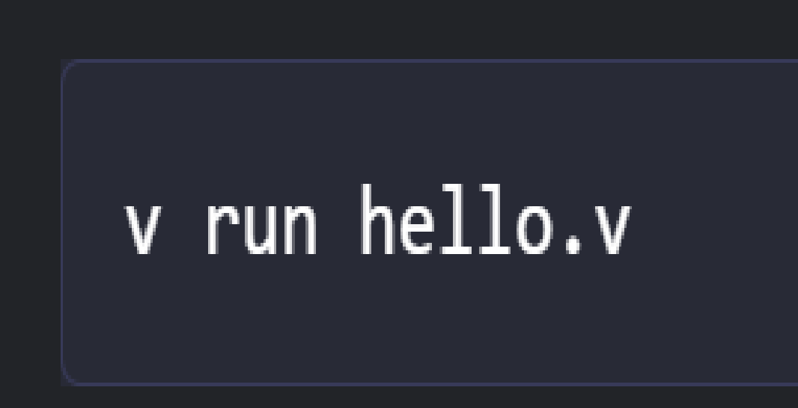

Vlang é indicada para Desenvolvimento Web, Desenvolvimento de Games, Interfaces Gráficas, Mobile, Ciência, Sistemas embarcados, e mais coisas.
Imagem retirada de terminal root
⠀⠀⠀⠀⠀⠀⠀⠀V ou Vlang é uma linguagem de programação : compilada, de uso geral e tipada estaticamente . Lançada como um projeto de código aberto em junho de 2019 por Alex Medvedniko. Projetado para desempenho, segurança e compilação rápida. O compilador é escrito em V e tem menos de 1MB, é capaz de compilar em menos de um segundo cerca de 1 milhão de linhas de código com zero dependências de biblioteca. Você pode aprender tudo sobre a linguagem somente lendo a documentação em uma hora e, na maioria dos casos, há apenas uma maneira de fazer algo. Isso resulta em código simples, legível e de fácil manutenção. Apesar de simples, V dá muito poder ao desenvolvedor e pode ser usado em praticamente todos os campos, incluindo programação de sistemas: Desenvolvimento Web, Desenvolvimento de Games, Interfaces Gráficas, Mobile, Ciência, Sistemas embarcados, Ferramentas, etc.
⠀⠀⠀⠀⠀⠀⠀⠀Na minha humilde opinião ela é uma boa linguagem para programadores intermediarios, ou quem já tem um certo conhecimento nas linguagens c, c++ e c#, tendo em vista que ela foi feita a partir de C.
imagem retirada do twitter oficial da linguagem
⠀⠀⠀⠀⠀⠀⠀⠀Seu PRÓPIO compilador não faz feio, além de que, segundo o criador, a linguagem V foi escrita em V. Ainda segundo o criador, ele tem o VSQL, um banco de dados SQL de arquivo único escrito em V puro, sem dependências, que na minha opinião é um GRANDIOSO diferencial, alem de ter um sistema operacional inteiro feito a partir de V.
⠀⠀⠀⠀⠀⠀⠀⠀ MAS NEM TUDO SÃO FLORES, e sua grande fraqueza é justamente o fato de ser uma linguagem recente, por ser de 2019 ela possui "poucos" usuários, e o compilador a ser utilizado tem que ser somente o que seu criador disponibiliza em seu site, e é necessario utilizar um codigo para executar seu código.

Imagem retirada de Vlang
⠀⠀⠀⠀⠀⠀⠀⠀ Por fim, ela é uma ótima linguagem para quem quer se aventurar em algo novo e aprender a lidar com novas tecnologias, porem infelizmente, acredito que não irá ser muito utilizada, ao menos pelos proximos anos. ela tem um potencial absurdo para ser uma substituta direta do C++ e quem sabe até mesmo Python. Acho que ela deveria ter maior visibilidade no campo do desenvolvimento de software. Se quiser, dê uma chance para ela, mesmo que por diversão. Você não irá se arrepender.